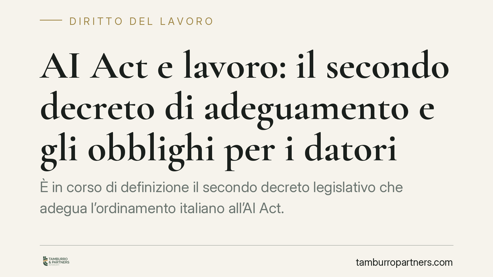

AI Act e lavoro: il secondo decreto di adeguamento e gli obblighi per i datori
È in corso di definizione il secondo decreto legislativo che adegua l'ordinamento italiano all'AI Act. Il provvedimento tocca anche l'uso dell'intelligenza artificiale in ambito lavorativo, dalla selezione del personale alla gestione dei dipendenti. Per i datori di lavoro significa nuovi obblighi di trasparenza e controllo. Vediamo l'inquadramento e i passi operativi da avviare fin da ora.

Il quadro: dall'AI Act al diritto interno
Il Regolamento UE 2024/1689 (c.d. AI Act) stabilisce un sistema di regole basato sul rischio per lo sviluppo e l'uso dei sistemi di intelligenza artificiale. Pur trattandosi di un regolamento direttamente applicabile, l'adeguamento richiede interventi nazionali su vigilanza, sanzioni e raccordo con le discipline di settore.
In questo contesto si colloca il secondo decreto di adeguamento, attualmente in fase di pubblicazione. Il provvedimento interviene sui poteri delle autorità competenti e sull'impiego dell'IA in ambiti sensibili: formazione, attività professionale, rapporto di lavoro, sanità e pubblica amministrazione.
*Nota di cautela: alla data di redazione gli estremi definitivi del decreto (numero e data di pubblicazione in Gazzetta Ufficiale) non risultano consolidati. Il quadro operativo va aggiornato alla luce del testo definitivo.*
Chi vigila: il piano istituzionale
Sul fronte della governance nazionale, l'impianto in discussione affida le funzioni di vigilanza e promozione all'Agenzia per l'Italia Digitale (AgID), mentre i profili di cybersicurezza dei sistemi di IA rientrano nell'ambito dell'Agenzia per la Cybersicurezza Nazionale (ACN). La ripartizione definitiva dei poteri va letta sul testo pubblicato, ma la direzione è quella di autorità già esistenti, non di un nuovo organismo creato ad hoc.
Perché riguarda chi gestisce personale
Il punto dirimente, sul piano sostanziale, è la classificazione del rischio. L'Allegato III, punto 4, del Regolamento UE 2024/1689 qualifica come ad alto rischio i sistemi di IA destinati a essere utilizzati nel settore «occupazione, gestione dei lavoratori e accesso al lavoro autonomo».
Rientrano quindi in questa categoria, tra gli altri, i software che selezionano o filtrano candidature, quelli che valutano la performance o assegnano compiti, e gli strumenti che incidono su promozioni o cessazioni del rapporto. Per i sistemi ad alto rischio l'AI Act impone obblighi stringenti: gestione del rischio, qualità dei dati, documentazione tecnica, registrazione automatica degli eventi e, soprattutto, sorveglianza umana effettiva.
Il raccordo con la disciplina italiana del lavoro
Gli obblighi europei non sostituiscono quelli interni, ma vi si sommano.
L'art. 4 dello Statuto dei lavoratori (L. 300/1970) regola gli strumenti dai quali può derivare un controllo a distanza dell'attività lavorativa: molti sistemi di IA applicati alla gestione del personale ricadono in questo perimetro.
Si aggiunge il c.d. Decreto Trasparenza (D.lgs. 104/2022), che ha modificato il D.lgs. 152/1997 introducendo specifici obblighi informativi quando l'assunzione, la gestione o la cessazione del rapporto sono affidate a sistemi decisionali o di monitoraggio automatizzati. Il lavoratore deve essere informato in modo chiaro su logica, parametri e conseguenze di tali sistemi.
Va infine richiamato l'art. 22 del GDPR (Regolamento UE 2016/679), che riconosce all'interessato il diritto di non essere sottoposto a una decisione basata unicamente su un trattamento automatizzato che produca effetti giuridici o incida in modo significativo sulla sua persona. È il fondamento normativo del principio di supervisione umana: una decisione che incide sul rapporto di lavoro non può essere lasciata interamente alla macchina.
Il ruolo della contrattazione collettiva
L'introduzione di strumenti di IA nei processi HR attiva, in molti casi, gli obblighi di informazione e consultazione sindacale. L'art. 4 dello Statuto, per determinate finalità, richiede accordo con le rappresentanze sindacali o, in assenza, autorizzazione dell'Ispettorato. La contrattazione collettiva può inoltre definire presidi ulteriori sull'uso di questi sistemi. Procedere senza questo passaggio espone a contestazioni e all'inutilizzabilità dei dati raccolti.
Cosa fare in concreto
- Mappare tutti i sistemi di IA già in uso o in valutazione nei processi di selezione, gestione e valutazione del personale.
- Classificare ciascun sistema in base al rischio, verificando se ricade nell'Allegato III, punto 4, dell'AI Act (alto rischio).
- Aggiornare le informative ex Decreto Trasparenza e la documentazione privacy, dando conto di logica e parametri dei sistemi automatizzati.
- Garantire la supervisione umana sulle decisioni che incidono sul rapporto di lavoro, nel rispetto dell'art. 22 GDPR.
- Verificare gli obblighi di informazione e consultazione sindacale prima di introdurre nuovi strumenti.
L'adeguamento richiede tempi non comprimibili: è opportuno avviare la mappatura prima che il quadro sanzionatorio diventi pienamente operativo.
---
Contributo informativo a cura di Tamburro & Partners Avvocati – Avv. Giuseppe Tamburro. Non costituisce parere legale.
Ogni storia di lavoro ha i suoi tempi.
Se gestisci HR e vuoi un confronto su contenzioso, ispezioni o licenziamenti, scrivi allo studio. Ti rispondiamo entro un giorno lavorativo.